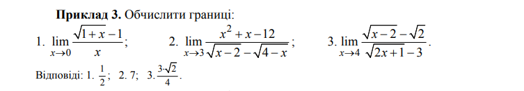
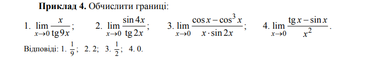
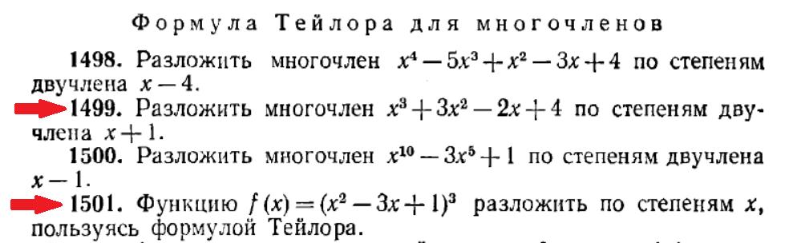

Лабораторна робота студентки 1 курсу групи "Математика" Чулкової Анни Олегівни
Звіт до лабораторної роботи №2.
1) Глава 9.3 "Знаходження лімітів"iframe з результатом у png форматі
2) Глава 9.4 "Розкладання в ряд Тейлора"iframe з результатом у png форматі
3) 2 приклади на знаходження лімітів (границі) в середовищі Maxima:сторінка 53, 54 Приклади 1-6 по 2 задачідля номерів в групі 7-12. Номер 9


4) 2 приклади на розкладання в ряд Тейлора в середовищі Maxima:(номер в групі парний - 2 парних приклада, номер в групі непарний - 2 непарних приклада)
